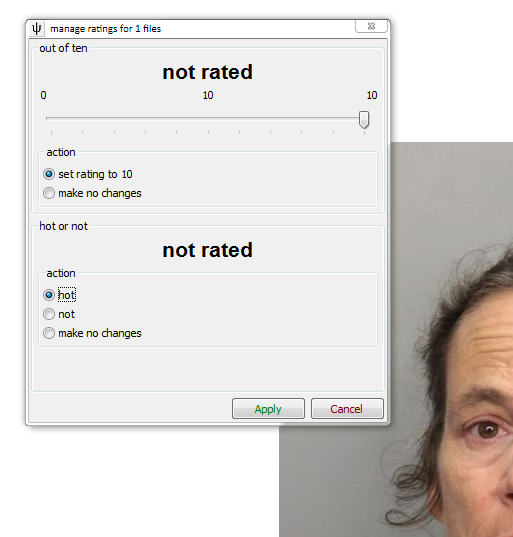
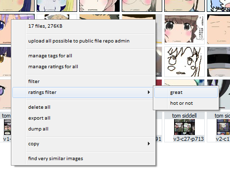
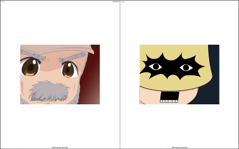
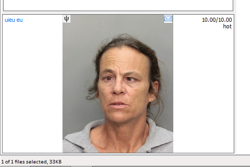
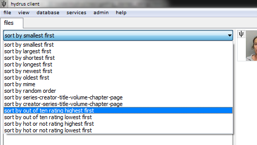

For now, this is local only! It is planned to add ratings repositories so people can share ratings, but I am still thinking about the best technical way to do it!
what is the difference between tags and ratings?
Tags describe a file. They are words, usually, like 'funny' or 'sexy' or 'wallpaper'. Ratings value a file. They are numbers, usually, like '3' for '3 out of 5 stars', or '0' or '1' for 'dislike' and 'like'.
The hydrus client supports two kinds of ratings: like/dislike and numerical. Let's start with the simpler one:
like/dislike
This sets one of two values to a file, the names for which you can set to whatever you want:

numerical
This is '3 out of 5 stars' or '8/10'. You can set the range to whatever whole numbers you like:

You can change these limits at a later date, and the database will remember existing ratings appropriately. Going from a five star rating to a ten star rating will make anything rated 3/5 become 6/10. Going back again would make a 9/10 become 4.5/5.
now what?
Once you have sorted out some services, you can edit ratings for one or more files with F4:

If you hit F4 on one file, the dialog will show that file's ratings. If you hit F4 on several files, it'll try its best to show you a summary of all the files' ratings. When you set new ratings with this dialog, the ratings will be applied to all files.
ratings filter
This runs fine, but I think the process needs work. For now, only do it if you have a lot of files to rate, so you don't run out of potential comparisons!
If you would like to rate many files quickly, the client now lets you 'filter' them, like with the inbox/archive filter. You select it from some thumbnails' right-click menu as usual.

If you select a 'like' ratings service, it will show a normal fullscreen filter with the same controls as the inbox/archive filter, with:
- Left-click or space: set rating to 'like', move on
- Right-click or delete: set rating to 'dislike', move on
- Arrow key up: Skip this file, move on
- Middle-click or backspace: I didn't mean that, go back one
- Escape, return, or F12: stop filtering now
If you select a 'numerical' ratings filter, the menu will launch a new fullscreen window that will show already rated files beside the images you wish to rate, like so:

Once it has exhausted currently rated files, it will try to compare the unrated files with each other. The current controls are:
- Arrow key left or left mouse button: the left image is better
- Arrow key right or right mouse button: the right image is better
- Arrow key down or middle mouse button: the files are about equal
- Arrow key up or space: skip decision, and show another random comparison
- Backspace: I didn't mean that, go back one
- Escape or return: stop filtering now
Every small decision you make will give the client another clue about how good a file is; e.g. if you say a file is better than a 7/10 file, it must be either 8/10, 9/10 or 10/10. The client will later show you a file in this range to narrow it down further.
so, what now?
Ratings will show in the preview screen and fullscreen views, like so:

You can search with system:rating, and sort in the normal manner:

And that's it! For remote ratings, you'll set what you believe the rating should be, and anything you haven't rated personally will be given the average of what everyone else thinks.